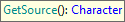
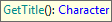
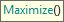
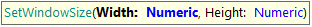
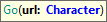
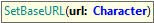
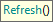
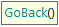
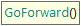

GXtest UI Commands - Browser
GetSource

Gets the source HTML code of the current webpage.
Returns: The webpage source-code as a string
Example of use:
&wp_source = &driver.GetSource()
GetTitle

Gets the current webpage title.
Returns: The webpage title as a string
Example of use:
&wp_title = &driver.GetTitle()
Maximize

Maximizes the browser window.
Example of use:
&driver.Maximize()
SetWindowSize

Sets the browser's exact window size.
Parameters:
- Width: window width in pixels
- Height: window height in pixels
Example of use:
&driver.SetWindowSize(720, 480)
Go

Navigates to the given URL.
Parameters:
- url: target URL to navigate to, it can be full or partial. In case it is partial it will be combined with the Base URL property.
Example of use:
&driver.Go(WebPanelX.Link())
&driver.Go("https://abstracta.us/why-us/company")
SetBaseURL

Sets a base URL to be used when relative paths are given to Go commands. This is automatically set if you have configured the BaseURL property on your environment.
Parameters:
- url: the base URL to be set. It will be combined with the url parameter of Go commands.
Example of use:
&driver.SetBaseURL("https://serverName/applicationName/")
Refresh

Refreshes (reloads) the browser webpage.
Example of use:
&driver.Refresh()
GoBack

Goes to the previous page
Example of use:
&driver.GoBack()
GoForward

Goes to the next page. Note that it is required to perform a GoBack command in order for this command could be used.
Example of use:
&driver.GoForward()
ScriptEval

Runs JavaScript code.
Parameters:
- Script: a string containing the JavaScript code to run.
Returns:
- Script's returned value.
Example of use:
//Change Title to "New Title" using Javascript
&driver.ScriptEval("document.title = 'New Title';")
// Get last status code
&statusCode = &driver.ScriptEval("return window.gx.http.lastStatus")
Notes: JS functions are intended for some specific automation that (for some reason) is it not possible to achieve using traditional UI commands, so this is intended to be used only by experienced users.